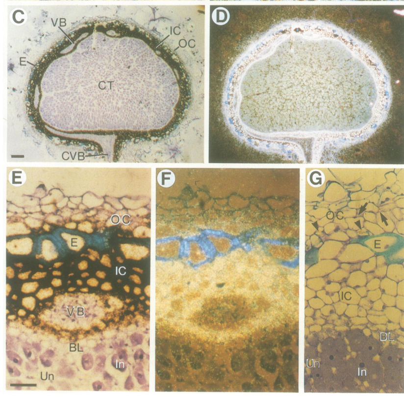

ENOD2A (P08297; early nodulin-75 / N-75 / NGm-75) is a soybean "early nodulin", one of a pair of nearly identical, tandemly arranged genes (ENOD2A and ENOD2B) encoding the same proline-rich protein. It is a 309-residue secreted precursor with an N-terminal signal peptide (residues 1-25) and a long, disordered, very proline-rich mature region built almost entirely from pentapeptide repeats (variants of Pro-Pro-x-Tyr/His-Lys rich in Glu/Lys), the hallmark architecture of the hydroxyproline-rich/proline-rich cell-wall glycoprotein (HRGP/extensin) class. ENOD2 is therefore best understood as a secreted, (hydroxy)proline-rich STRUCTURAL cell-wall protein, not an enzyme, transporter or signalling molecule. Its defining feature is spatially and temporally restricted expression: ENOD2 mRNA appears early in nodule development (detectable ~day 6, strong by ~day 10, before nitrogen fixation) and in situ hybridisation localises it predominantly to the nodule inner cortex / nodule parenchyma, plus cells surrounding the connecting vascular bundle that links the determinate nodule to the root central cylinder (van de Wiel et al. 1990). The nodule parenchyma is the tissue layer associated with the steep oxygen-concentration gradient that protects oxygen-sensitive nitrogenase, and the prevailing (but inferential) hypothesis is that ENOD2 contributes structurally to the specialized cell walls / morphology of this layer and possibly to its oxygen-diffusion- barrier properties. Importantly, ENOD2 is a classic early-nodulin MARKER gene defined by its nodule-specific expression rather than by any demonstrated mechanistic role in the Nod-factor signalling or nodule-organogenesis program; no loss-of-function genetics exists for soybean ENOD2, and a later synthesis (Foster 1998) notes ENOD2 is "unlikely to be solely responsible" for nodule oxygen regulation. Consequently the legacy "nodulation" annotation is best read as an expression-derived over-annotation, while the genuinely supported core nature of the protein is a nodule-parenchyma cell-wall structural glycoprotein localised to the apoplast/extracellular region.
| GO Term | Evidence | Action | Reason |
|---|---|---|---|
|
GO:0005737
cytoplasm
|
IBA
GO_REF:0000033 |
MODIFY |
Summary: IBA annotation propagated across the PANTHER proline-rich cell-wall protein group (PTN007993732). It places ENOD2 in the cytoplasm, which directly contradicts the best-supported localisation: ENOD2 is a SECRETED protein with an N-terminal signal peptide that is targeted to the apoplast / cell wall.
Reason: "Cytoplasm" is almost certainly incorrect for ENOD2 and is a poor phylogenetic propagation for a secreted cell-wall protein. The UniProt entry annotates a signal peptide over residues 1-25 (SIGNAL 1..25) and a long disordered, proline-rich mature chain, and the protein belongs to the hydroxyproline-rich/proline-rich cell-wall protein class. The deep-research synthesis concludes the best-supported localisation is the secretory pathway leading to the apoplast/cell wall, based on the proline-rich repeat architecture and the predicted N-terminal signal peptide. An intracellular cytoplasmic location is inconsistent with these features. The annotation should be MODIFIED to the correct extracellular/cell-wall localisation. Because no direct protein-localisation experiment for soybean ENOD2 was retrievable (only sequence-based and tissue-level evidence), the conservative supported replacement is the broad "extracellular region" (GO:0005576), with the more specific apoplast (GO:0048046) and plant-type cell wall (GO:0009505) as additional candidate locations supported by the protein class.
Supporting Evidence:
file:SOYBN/ENOD2A/ENOD2A-deep-research-falcon.md
A **putative N-terminal signal peptide** is reported from ENOD2 gene sequence analysis, consistent with secretion into the apoplast and association with the cell wall.
file:SOYBN/ENOD2A/ENOD2A-deep-research-falcon.md
the best-supported localization with the available evidence is: **secretory pathway → apoplast/cell wall** in **nodule parenchyma (inner cortex) cells** and cells associated with the nodule-root vascular connection.
UniProtKB:P08297
SIGNAL 1..25
|
|
GO:0009877
nodulation
|
IEA
GO_REF:0000043 |
MARK AS OVER ANNOTATED |
Summary: SPKW (GO_REF:0000043) annotation derived from the UniProt keyword "Nodulation"; snapshot-only, removed in the current GOA release. ENOD2 is a classic "early nodulin" MARKER, defined by nodule-specific EXPRESSION (inner cortex / nodule parenchyma) of a proline-rich cell-wall protein, rather than by a demonstrated mechanistic role in the nodulation signalling or organogenesis program.
Reason: GOA's removal of this annotation was JUSTIFIED. "Nodulation" (GO:0009877) here is an expression-not-function over-annotation. The evidence base for ENOD2 is dominated by transcript localisation: in situ hybridisation localises ENOD2 mRNA predominantly to the nodule inner cortex / nodule parenchyma and to cells around the connecting vascular bundle, and it is detectable early (~day 6, strong by ~day 10) before nitrogen fixation. This nodule-restricted EXPRESSION earned the SwissProt "Nodulation" keyword, but ENOD2 is a secreted, very proline-rich (hydroxyproline-rich) STRUCTURAL cell-wall protein, and its proposed contribution to nodulation is an inferential structural role ("may contribute to the special morphology of nodule parenchyma cells", possibly to the oxygen-diffusion barrier) - not a demonstrated function in the developmental/signalling process. There is no loss-of-function genetics for soybean ENOD2, and a later synthesis notes ENOD2 is "unlikely to be solely responsible" for nodule oxygen regulation. Because the gene's actual nature (a parenchyma cell-wall structural glycoprotein) is better captured by structural / cell-wall / extracellular terms (see the NEW entries below and the MODIFY on cytoplasm), the broad process term "nodulation" - assigned purely from an expression-derived keyword - is an over-annotation and its removal is appropriate. (It is not flatly wrong - ENOD2 IS a nodule-specific gene - hence MARK_AS_OVER_ANNOTATED rather than REMOVE.)
Supporting Evidence:
file:SOYBN/ENOD2A/ENOD2A-deep-research-falcon.md
ENOD2’s most concrete “application” is as a **molecular marker** of nodule parenchyma/inner cortex differentiation and early nodule development, supported by its strong and specific localization pattern in soybean nodules.
file:SOYBN/ENOD2A/ENOD2A-deep-research-falcon.md
an “early nodulin” encoding a **very proline-rich protein with repeating pentapeptides** and sequence features consistent with a **secreted hydroxyproline-rich cell-wall protein precursor**.
file:SOYBN/ENOD2A/ENOD2A-deep-research-falcon.md
Review summarizes evidence that ENOD2 is cell-wall associated and may influence structure, but notes some cited studies argue against a strict oxygen-regulation role
file:SOYBN/ENOD2A/ENOD2A-deep-research-falcon.md
This remains a **hypothesis based on localization + protein class**, not a demonstrated biochemical mechanism.
|
|
GO:0005199
structural constituent of cell wall
|
ISS
file:SOYBN/ENOD2A/ENOD2A-deep-research-falcon.md |
NEW |
Summary: ENOD2 is a secreted, very proline-rich protein of the hydroxyproline-rich cell-wall glycoprotein (HRGP/extensin) class, built from pentapeptide repeats - the molecular hallmark of a structural cell-wall constituent. This captures the genuinely supported molecular nature of the protein, which the current GOA set lacks entirely.
Reason: The only current-GOA annotation for ENOD2 (cytoplasm, IBA) is misleading, and the retired "nodulation" term reflects expression rather than function. What IS supported is that ENOD2 is a structural cell-wall protein. The protein is described as a very proline-rich protein composed largely of pentapeptide repeats that strongly resembles soybean cell-wall glycoproteins, with a putative N-terminal signal peptide consistent with secretion to the apoplast/cell wall (van de Wiel et al. 1990, via the deep-research synthesis). UniProt independently flags the protein as a Precursor with a Signal feature, a long Disordered region and multiple Pro-residue compositional-bias segments, and places it in the "nodulin 75 family" / "Proline-rich_CW_protein" (IPR051308) family. "Structural constituent of cell wall" (GO:0005199) is the accurate molecular-function term for this protein class. Evidence is ISS (inferred from sequence/structural similarity to characterised proline-rich cell-wall glycoproteins); no direct biochemical structural assay exists for soybean ENOD2, so the annotation is appropriately conservative.
Supporting Evidence:
file:SOYBN/ENOD2A/ENOD2A-deep-research-falcon.md
Protein described as very proline-rich and built largely from pentapeptide repeats containing two prolines; strongly resembles soybean cell-wall glycoproteins
file:SOYBN/ENOD2A/ENOD2A-deep-research-falcon.md
Soybean ENOD2 encodes a **very proline-rich protein** composed largely of **pentapeptide repeats**.
UniProtKB:P08297
InterPro; IPR051308; Proline-rich_CW_protein.
|
|
GO:0005576
extracellular region
|
ISS
file:SOYBN/ENOD2A/ENOD2A-deep-research-falcon.md |
NEW |
Summary: ENOD2 is a secreted precursor (N-terminal signal peptide) of the proline-rich cell-wall protein class; its mature product is targeted to the apoplast / cell wall, i.e. the extracellular region. This is the correct localisation that should replace the erroneous "cytoplasm" IBA annotation.
Reason: The best-supported localisation for ENOD2, based on the predicted N-terminal signal peptide and the proline-rich cell-wall protein class, is the secretory pathway leading to the apoplast/cell wall. UniProt annotates SIGNAL 1..25 and treats the entry as a Precursor. "Extracellular region" (GO:0005576) is the conservative, well-supported cellular-component term; the more specific apoplast (GO:0048046) and plant-type cell wall (GO:0009505) are also supported by the protein class and are proposed as candidate refinements. Evidence is ISS because the localisation rests on sequence features and protein-class inference rather than a direct protein-localisation experiment for soybean ENOD2.
Supporting Evidence:
file:SOYBN/ENOD2A/ENOD2A-deep-research-falcon.md
the best-supported localization with the available evidence is: **secretory pathway → apoplast/cell wall** in **nodule parenchyma (inner cortex) cells** and cells associated with the nodule-root vascular connection.
file:SOYBN/ENOD2A/ENOD2A-deep-research-falcon.md
A putative N-terminal signal peptide supports secretion of ENOD2 to the cell wall / apoplast
UniProtKB:P08297
SIGNAL 1..25
|
Q: Does the soybean ENOD2 protein (not just its mRNA) localise to the cell wall / apoplast of nodule parenchyma cells, and is it hydroxylated/glycosylated as predicted for an HRGP-class protein?
Suggested experts: Ton Bisseling
Q: Does loss of function of ENOD2A/ENOD2B (e.g. CRISPR knockout of the tandem locus) affect nodule parenchyma structure, the nodule oxygen-diffusion barrier, or nitrogen-fixation efficiency in soybean?
Suggested experts: Ton Bisseling
Q: Is ENOD2 expression a downstream marker of inner-cortex differentiation, or does the ENOD2 cell-wall protein itself feed back on parenchyma cell-wall assembly?
Suggested experts: Henk Franssen
Experiment: Raise antibodies against the recombinant ENOD2 mature repeat region and perform immuno-electron-microscopy / immunolocalisation on soybean nodule sections to determine whether the protein is deposited in the cell walls of nodule parenchyma cells.
Hypothesis: ENOD2 protein accumulates in the cell wall / apoplast of nodule inner-cortex (parenchyma) cells, consistent with its predicted signal peptide and HRGP-class architecture.
Type: protein immunolocalisation
Experiment: Generate CRISPR/Cas9 knockouts of the tandem ENOD2A/ENOD2B locus in soybean and characterise nodule anatomy, parenchyma cell-wall ultrastructure, intranodular oxygen profiles (microelectrode) and acetylene-reduction nitrogen-fixation activity.
Hypothesis: ENOD2 contributes structurally to nodule parenchyma cell walls and the oxygen-diffusion barrier; its loss perturbs parenchyma morphology and/or the oxygen gradient protecting nitrogenase.
Type: loss-of-function genetics with nodule phenotyping
Experiment: Express ENOD2 in a heterologous system and assay post-translational modification (prolyl hydroxylation, arabinosylation) and cross-linking behaviour characteristic of extensin/HRGP cell-wall proteins.
Hypothesis: ENOD2 undergoes HRGP-type hydroxylation/glycosylation and can be incorporated into a cross-linked cell-wall network, supporting a structural cell-wall role.
Type: biochemical post-translational-modification assay
The research report should be a detailed narrative explaining the function, biological processes, and localization of the gene product. Citations should be given for all claims.
You should prioritize authoritative reviews and primary scientific literature when conducting research. You can supplement
this with annotations you find in gene/protein databases, but these can be outdated or inaccurate.
We are specifically interested in the primary function of the gene - for enzymes, what reaction is catalyzed, and what is the substrate specificity? For transporters, what is the substrate? For structural proteins or adapters, what is the broader structural role? For signaling molecules, what is the role in the pathway.
We are interested in where in or outside the cell the gene product carries out its function.
We are also interested in the signaling or biochemical pathways in which the gene functions. We are less interested in broad pleiotropic effects, except where these elucidate the precise role.
Include evidence where possible. We are interested in both experimental evidence as well as inference from structure, evolution, or bioinformatic analysis. Precise studies should be prioritized over high-throughput, where available.
The research target provided (UniProt P08297; Early nodulin-75 / NGm-75; genes ENOD2A/ENOD2B; Glycine max) corresponds in the primary literature to soybean ENOD2, an “early nodulin” encoding a very proline-rich protein with repeating pentapeptides and sequence features consistent with a secreted hydroxyproline-rich cell-wall protein precursor. The most directly relevant soybean primary evidence available in this run is van de Wiel et al. (1990, EMBO Journal; publication date 1990-01; URL https://doi.org/10.1002/j.1460-2075.1990.tb08073.x), which explicitly characterizes soybean ENOD2 transcripts in nodules and discusses the product as a putative cell-wall protein with a putative signal peptide. (wiel1990theearlynodulin pages 1-2, wiel1990theearlynodulin pages 3-5)
Limitation (important): the retrieved sources do not explicitly map UniProt accession P08297 to a specific soybean genomic locus or distinguish ENOD2A vs ENOD2B at sequence level. Therefore, evidence below is presented as applying to soybean ENOD2 / nodulin-75 family consistent with the UniProt entry description, but cannot be unambiguously partitioned between ENOD2A and ENOD2B using the current tool-retrieved corpus. (wiel1990theearlynodulin pages 1-2, wiel1990theearlynodulin pages 3-5)
“Early nodulins” are plant genes induced during early stages of legume nodule development, prior to the onset of nitrogen fixation. Soybean ENOD2 is a canonical early nodulin transcript detected early in developing nodules and localized to specific nodule tissues rather than uniformly expressed. (wiel1990theearlynodulin pages 1-2, wiel1990theearlynodulin pages 2-3)
Soybean ENOD2 encodes a very proline-rich protein composed largely of pentapeptide repeats. Sequence analysis of soybean ENOD2 genes indicates a putative N-terminal signal peptide, supporting the interpretation that ENOD2 is synthesized as a secreted precursor and functions in the apoplast/cell wall (i.e., as a hydroxyproline-rich cell wall protein class). (wiel1990theearlynodulin pages 2-3, wiel1990theearlynodulin pages 3-5)
van de Wiel et al. (1990) use “inner cortex” (also discussed as nodule parenchyma) as a distinct nodule tissue layer. This parenchyma is physiologically important because it is associated with the steep oxygen concentration gradient across the nodule, a feature central to protecting oxygen-sensitive nitrogenase in infected tissues. The spatially restricted ENOD2 expression in this layer provides a structural-functional hypothesis for ENOD2 in nodule morphogenesis and/or barrier formation. (wiel1990theearlynodulin pages 1-2, wiel1990theearlynodulin pages 3-5)
The strongest direct evidence comes from in situ hybridization in soybean nodules.
These spatial patterns are visible in the figure panels retrieved from the original article (in situ hybridization signal concentrated in inner cortex/parenchyma and around the connecting vascular bundle). (wiel1990theearlynodulin media a3bad28a, wiel1990theearlynodulin media 2560211d)
ENOD2 is detected early in nodule development:
Quantitative limitation: the retrieved excerpts describe timing and qualitative signal intensity but do not provide fold-change values or absolute transcript counts. (wiel1990theearlynodulin pages 2-3, wiel1990theearlynodulin pages 3-5)
van de Wiel et al. discuss ENOD2 expression in contexts interpreted as involving early symbiotic signaling, including “empty” nodules triggered by specific bacterial genetic contexts (e.g., nod gene-related induction) rather than successful infection. This supports the view that ENOD2 is part of an early developmental program downstream of symbiotic signaling and tissue differentiation (inner cortex/parenchyma development), rather than being restricted to infected cells. (wiel1990theearlynodulin pages 2-3)
Caveat: within the retrieved content, these induction contexts are described qualitatively; detailed Nod factor dose–responses or promoter dissection data specific to soybean ENOD2A/ENOD2B were not retrievable. (wiel1990theearlynodulin pages 2-3)
Because ENOD2 is inferred to be a secreted, (hydroxy)proline-rich cell wall protein and its transcripts localize to a specialized nodule tissue (inner cortex/parenchyma), van de Wiel et al. propose ENOD2 contributes to the special morphology of nodule parenchyma cells. (wiel1990theearlynodulin pages 5-6, wiel1990theearlynodulin pages 1-2, wiel1990theearlynodulin pages 3-5)
The same study links the parenchyma tissue to establishment of a steep oxygen concentration decline across the nodule and suggests that differentiation of the cell wall in this region could influence tissue morphology and barrier properties, with ENOD2 as a candidate contributing factor. This remains a hypothesis based on localization + protein class, not a demonstrated biochemical mechanism. (wiel1990theearlynodulin pages 1-2, wiel1990theearlynodulin pages 3-5)
A later synthesis in Foster (1998; Iowa State University dissertation accessible via DOI; URL https://doi.org/10.31274/rtd-180813-10838; publication year 1998) summarizes broad ENOD2 family literature and notes that although ENOD2 is frequently discussed as a parenchyma-associated cell-wall protein potentially related to oxygen permeability, there is also literature arguing ENOD2 is unlikely to be solely responsible for oxygen regulation; thus, ENOD2 may instead (or additionally) function as a structural cell wall component supporting nodule development and tissue specialization. (foster1998nodulationandexpression pages 24-28, foster1998nodulationandexpression pages 101-106)
Direct protein localization data for soybean ENOD2A/ENOD2B were not retrieved here; however, the following sequence-based and tissue-level evidence supports an extracellular/cell-wall localization:
Thus, the best-supported localization with the available evidence is: secretory pathway → apoplast/cell wall in nodule parenchyma (inner cortex) cells and cells associated with the nodule-root vascular connection. (wiel1990theearlynodulin pages 3-5, wiel1990theearlynodulin media a3bad28a, wiel1990theearlynodulin media 2560211d)
Direct 2023–2024 primary studies on soybean ENOD2A/ENOD2B were not retrievable in this run. The most relevant recent source obtained was a 2024 review:
This review is relevant because it connects ENOD2-family biology to cell wall chemistry and micronutrient-dependent nodule development, aligning with ENOD2’s inferred role as a cell-wall associated proline-rich protein. (foster1998nodulationandexpression pages 24-28)
Within the retrieved corpus, ENOD2’s most concrete “application” is as a molecular marker of nodule parenchyma/inner cortex differentiation and early nodule development, supported by its strong and specific localization pattern in soybean nodules. (wiel1990theearlynodulin pages 1-2, wiel1990theearlynodulin media a3bad28a, wiel1990theearlynodulin media 2560211d)
In practical research workflows, ENOD2-type markers are used to:
Limitation: no ENOD2A/ENOD2B-specific biotechnological deployment (e.g., engineered alleles with field outcomes) was retrievable in the current evidence set.
The strongest “data-like” statements available here are developmental timing and tissue specificity rather than numerical differential expression:
Day ~6: ENOD2 mRNA detectable in developing soybean nodules; Day ~10: signal becomes strong in inner cortex/parenchyma and around the vascular strand region. (wiel1990theearlynodulin pages 2-3, wiel1990theearlynodulin media a3bad28a, wiel1990theearlynodulin media 2560211d)
Spatial specificity: dominant signal in inner cortex/parenchyma, with relatively weaker signal reported in endodermis/adjacent outer cortex. (wiel1990theearlynodulin pages 5-6, wiel1990theearlynodulin pages 3-5)
| Finding / claim | Evidence type / method | Biological context (tissue / time) | Key details / quantitative info | Citation context ID(s) | Source URL and publication year |
|---|---|---|---|---|---|
| Soybean ENOD2 mRNA localizes mainly to the nodule inner cortex, also termed nodule parenchyma | In situ hybridization / autoradiography with antisense RNA probes | Mature soybean root nodules | Strong signal over inner cortex; little or no signal over outer cortex / vascular bundle; lower signal over endodermis and adjacent outer cortex | (wiel1990theearlynodulin pages 5-6, wiel1990theearlynodulin pages 1-2) | https://doi.org/10.1002/j.1460-2075.1990.tb08073.x (1990) |
| Soybean ENOD2 transcripts are also detected in cells surrounding the connecting vascular bundle between nodule and root | In situ hybridization | Mature soybean nodules; tissue around connecting vascular bundle | Signal present in inner cortex plus cells around the vascular strand linking nodule to root central cylinder | (wiel1990theearlynodulin pages 5-6, wiel1990theearlynodulin pages 3-5, wiel1990theearlynodulin media a3bad28a, wiel1990theearlynodulin media 2560211d) | https://doi.org/10.1002/j.1460-2075.1990.tb08073.x (1990) |
| ENOD2 is expressed early during nodule development, before nitrogen fixation | Developmental staging plus in situ hybridization | Developing soybean nodules | Soybean ENOD2 messenger detectable by about day 6 after sowing / inoculation; by day 10 signal is strong in inner cortex and around vascular strand | (wiel1990theearlynodulin pages 2-3, wiel1990theearlynodulin pages 3-5, wiel1990theearlynodulin media a3bad28a, wiel1990theearlynodulin media 2560211d) | https://doi.org/10.1002/j.1460-2075.1990.tb08073.x (1990) |
| ENOD2 expression is associated with differentiation of nodule inner cortical cells | Histology plus in situ hybridization | Early nodule primordia and developing nodules | Expression reported upon differentiation of nodule meristem into inner cortical cells, supporting a developmental marker role for parenchyma formation | (wiel1990theearlynodulin pages 1-2, wiel1990theearlynodulin pages 3-5) | https://doi.org/10.1002/j.1460-2075.1990.tb08073.x (1990) |
| Soybean ENOD2 encodes a proline-rich, likely hydroxyproline-rich cell-wall protein | cDNA sequence analysis and comparative protein inference | Protein-level functional inference for soybean nodulin-75 / NGm-75 | Protein described as very proline-rich and built largely from pentapeptide repeats containing two prolines; strongly resembles soybean cell-wall glycoproteins | (wiel1990theearlynodulin pages 5-6, wiel1990theearlynodulin pages 1-2, wiel1990theearlynodulin pages 2-3) | https://doi.org/10.1002/j.1460-2075.1990.tb08073.x (1990) |
| A putative N-terminal signal peptide supports secretion of ENOD2 to the cell wall / apoplast | Sequence analysis / bioinformatic inference from soybean ENOD2 genes | Protein precursor architecture | Sequence analysis indicates a putative N-terminal signal peptide, consistent with a secreted hydroxyproline-rich cell-wall protein precursor | (wiel1990theearlynodulin pages 3-5) | https://doi.org/10.1002/j.1460-2075.1990.tb08073.x (1990) |
| ENOD2 is induced in bacteria-free or “empty” nodules, indicating activation by early symbiotic signaling rather than infection alone | Comparative expression analysis in effective, ineffective, and empty nodules; cited developmental genetics evidence | Nodules elicited by certain Rhizobium / Bradyrhizobium strains and by Agrobacterium carrying nod genes | Supported as expression in empty nodules and after nod gene signaling; evidence is supportive but mainly summarized from primary studies rather than quantified in the excerpt | (wiel1990theearlynodulin pages 2-3, foster1998nodulationandexpression pages 111-117) | https://doi.org/10.1002/j.1460-2075.1990.tb08073.x (1990); https://doi.org/10.31274/rtd-180813-10838 (1998) |
| Proposed function is structural: ENOD2 likely contributes to specialized parenchyma morphology and possibly oxygen-diffusion barrier properties | Functional inference from localization plus protein class | Nodule parenchyma / inner cortex | Because ENOD2 is a putative cell-wall protein concentrated in inner cortex, authors propose it helps shape parenchyma morphology linked to the oxygen-diffusion barrier protecting nitrogenase | (wiel1990theearlynodulin pages 5-6, wiel1990theearlynodulin pages 1-2, wiel1990theearlynodulin pages 3-5) | https://doi.org/10.1002/j.1460-2075.1990.tb08073.x (1990) |
| Later review-level synthesis suggests ENOD2 may not be strictly required for oxygen regulation, highlighting uncertainty in functional assignment | Literature synthesis / dissertation review | Legume nodules; family-level interpretation including soybean comparisons | Review summarizes evidence that ENOD2 is cell-wall associated and may influence structure, but notes some cited studies argue against a strict oxygen-regulation role | (foster1998nodulationandexpression pages 24-28, foster1998nodulationandexpression pages 101-106) | https://doi.org/10.31274/rtd-180813-10838 (1998) |
| A 2024 review links boron deficiency with impaired early nodulin protein biosynthesis, including ENOD2, and reduced soybean nodulation | Review article synthesis | Soybean nodulation under boron deficiency | Review states boron deficiency impairs nodulation in soybean due to impaired biosynthesis of early nodulin proteins such as ENOD2; this is a secondary-source claim and not ENOD2A-specific experimental proof | (foster1998nodulationandexpression pages 24-28) | https://doi.org/10.3389/fpls.2024.1332459 (2024) |
Table: This table compiles the main direct and indirect evidence for soybean ENOD2/early nodulin-75, emphasizing localization, developmental timing, protein-class inference, signaling context, and a recent boron-related update. It is useful for distinguishing experimentally supported findings from broader review-based interpretations.
Most supported annotation with current evidence: Soybean ENOD2/nodulin-75 (consistent with the UniProt P08297 description for ENOD2A/ENOD2B) is best annotated as a secreted, proline-rich (hydroxyproline-rich) cell wall protein precursor expressed early during nodulation, with transcripts localized predominantly to the nodule parenchyma/inner cortex and to cells surrounding the nodule-root vascular connection. (wiel1990theearlynodulin pages 1-2, wiel1990theearlynodulin pages 3-5, wiel1990theearlynodulin media a3bad28a, wiel1990theearlynodulin media 2560211d)
Primary functional role (inferred): a structural role in cell-wall remodeling and tissue morphogenesis of the nodule parenchyma, potentially contributing to physiological properties of this tissue (e.g., oxygen diffusion barrier formation), though this latter aspect remains inferential rather than directly demonstrated. (wiel1990theearlynodulin pages 5-6, wiel1990theearlynodulin pages 3-5, foster1998nodulationandexpression pages 101-106)
References
(wiel1990theearlynodulin pages 1-2): Clemens van de Wiel, B. Scheres, '. HenkFranssen, M. V. Lierop, A. Lammeren, Albert A. van, '. Kammen, and T. Bisseling. The early nodulin transcript enod2 is located in the nodule parenchyma (inner cortex) of pea and soybean root nodules. The EMBO Journal, 9:1-7, Jan 1990. URL: https://doi.org/10.1002/j.1460-2075.1990.tb08073.x, doi:10.1002/j.1460-2075.1990.tb08073.x. This article has 312 citations.
(wiel1990theearlynodulin pages 3-5): Clemens van de Wiel, B. Scheres, '. HenkFranssen, M. V. Lierop, A. Lammeren, Albert A. van, '. Kammen, and T. Bisseling. The early nodulin transcript enod2 is located in the nodule parenchyma (inner cortex) of pea and soybean root nodules. The EMBO Journal, 9:1-7, Jan 1990. URL: https://doi.org/10.1002/j.1460-2075.1990.tb08073.x, doi:10.1002/j.1460-2075.1990.tb08073.x. This article has 312 citations.
(wiel1990theearlynodulin pages 2-3): Clemens van de Wiel, B. Scheres, '. HenkFranssen, M. V. Lierop, A. Lammeren, Albert A. van, '. Kammen, and T. Bisseling. The early nodulin transcript enod2 is located in the nodule parenchyma (inner cortex) of pea and soybean root nodules. The EMBO Journal, 9:1-7, Jan 1990. URL: https://doi.org/10.1002/j.1460-2075.1990.tb08073.x, doi:10.1002/j.1460-2075.1990.tb08073.x. This article has 312 citations.
(wiel1990theearlynodulin pages 5-6): Clemens van de Wiel, B. Scheres, '. HenkFranssen, M. V. Lierop, A. Lammeren, Albert A. van, '. Kammen, and T. Bisseling. The early nodulin transcript enod2 is located in the nodule parenchyma (inner cortex) of pea and soybean root nodules. The EMBO Journal, 9:1-7, Jan 1990. URL: https://doi.org/10.1002/j.1460-2075.1990.tb08073.x, doi:10.1002/j.1460-2075.1990.tb08073.x. This article has 312 citations.
(wiel1990theearlynodulin media a3bad28a): Clemens van de Wiel, B. Scheres, '. HenkFranssen, M. V. Lierop, A. Lammeren, Albert A. van, '. Kammen, and T. Bisseling. The early nodulin transcript enod2 is located in the nodule parenchyma (inner cortex) of pea and soybean root nodules. The EMBO Journal, 9:1-7, Jan 1990. URL: https://doi.org/10.1002/j.1460-2075.1990.tb08073.x, doi:10.1002/j.1460-2075.1990.tb08073.x. This article has 312 citations.
(wiel1990theearlynodulin media 2560211d): Clemens van de Wiel, B. Scheres, '. HenkFranssen, M. V. Lierop, A. Lammeren, Albert A. van, '. Kammen, and T. Bisseling. The early nodulin transcript enod2 is located in the nodule parenchyma (inner cortex) of pea and soybean root nodules. The EMBO Journal, 9:1-7, Jan 1990. URL: https://doi.org/10.1002/j.1460-2075.1990.tb08073.x, doi:10.1002/j.1460-2075.1990.tb08073.x. This article has 312 citations.
(foster1998nodulationandexpression pages 24-28): Carol Marie Foster. Nodulation and expression of the early nodulation gene, enod2, in temperate woody legumes of the papilionoideae. ArXiv, 1998. URL: https://doi.org/10.31274/rtd-180813-10838, doi:10.31274/rtd-180813-10838. This article has 1 citations.
(foster1998nodulationandexpression pages 101-106): Carol Marie Foster. Nodulation and expression of the early nodulation gene, enod2, in temperate woody legumes of the papilionoideae. ArXiv, 1998. URL: https://doi.org/10.31274/rtd-180813-10838, doi:10.31274/rtd-180813-10838. This article has 1 citations.
(foster1998nodulationandexpression pages 111-117): Carol Marie Foster. Nodulation and expression of the early nodulation gene, enod2, in temperate woody legumes of the papilionoideae. ArXiv, 1998. URL: https://doi.org/10.31274/rtd-180813-10838, doi:10.31274/rtd-180813-10838. This article has 1 citations.

id: P08297
gene_symbol: ENOD2A
product_type: PROTEIN
status: COMPLETE
taxon:
id: NCBITaxon:3847
label: Glycine max
description: >
ENOD2A (P08297; early nodulin-75 / N-75 / NGm-75) is a soybean "early nodulin", one of
a pair of nearly identical, tandemly arranged genes (ENOD2A and ENOD2B) encoding the
same proline-rich protein. It is a 309-residue secreted precursor with an N-terminal
signal peptide (residues 1-25) and a long, disordered, very proline-rich mature region
built almost entirely from pentapeptide repeats (variants of Pro-Pro-x-Tyr/His-Lys
rich in Glu/Lys), the hallmark architecture of the hydroxyproline-rich/proline-rich
cell-wall glycoprotein (HRGP/extensin) class. ENOD2 is therefore best understood as a
secreted, (hydroxy)proline-rich STRUCTURAL cell-wall protein, not an enzyme, transporter
or signalling molecule. Its defining feature is spatially and temporally restricted
expression: ENOD2 mRNA appears early in nodule development (detectable ~day 6, strong by
~day 10, before nitrogen fixation) and in situ hybridisation localises it predominantly
to the nodule inner cortex / nodule parenchyma, plus cells surrounding the connecting
vascular bundle that links the determinate nodule to the root central cylinder
(van de Wiel et al. 1990). The nodule parenchyma is the tissue layer associated with the
steep oxygen-concentration gradient that protects oxygen-sensitive nitrogenase, and the
prevailing (but inferential) hypothesis is that ENOD2 contributes structurally to the
specialized cell walls / morphology of this layer and possibly to its oxygen-diffusion-
barrier properties. Importantly, ENOD2 is a classic early-nodulin MARKER gene defined by
its nodule-specific expression rather than by any demonstrated mechanistic role in the
Nod-factor signalling or nodule-organogenesis program; no loss-of-function genetics
exists for soybean ENOD2, and a later synthesis (Foster 1998) notes ENOD2 is "unlikely
to be solely responsible" for nodule oxygen regulation. Consequently the legacy
"nodulation" annotation is best read as an expression-derived over-annotation, while the
genuinely supported core nature of the protein is a nodule-parenchyma cell-wall
structural glycoprotein localised to the apoplast/extracellular region.
existing_annotations:
# --- Current GOA annotation (2025/2026 release) ---
- term:
id: GO:0005737
label: cytoplasm
evidence_type: IBA
original_reference_id: GO_REF:0000033
qualifier: is_active_in
review:
summary: >
IBA annotation propagated across the PANTHER proline-rich cell-wall protein group
(PTN007993732). It places ENOD2 in the cytoplasm, which directly contradicts the
best-supported localisation: ENOD2 is a SECRETED protein with an N-terminal signal
peptide that is targeted to the apoplast / cell wall.
action: MODIFY
reason: >
"Cytoplasm" is almost certainly incorrect for ENOD2 and is a poor phylogenetic
propagation for a secreted cell-wall protein. The UniProt entry annotates a signal
peptide over residues 1-25 (SIGNAL 1..25) and a long disordered, proline-rich mature
chain, and the protein belongs to the hydroxyproline-rich/proline-rich cell-wall
protein class. The deep-research synthesis concludes the best-supported localisation
is the secretory pathway leading to the apoplast/cell wall, based on the proline-rich
repeat architecture and the predicted N-terminal signal peptide. An intracellular
cytoplasmic location is inconsistent with these features. The annotation should be
MODIFIED to the correct extracellular/cell-wall localisation. Because no direct
protein-localisation experiment for soybean ENOD2 was retrievable (only sequence-based
and tissue-level evidence), the conservative supported replacement is the broad
"extracellular region" (GO:0005576), with the more specific apoplast (GO:0048046) and
plant-type cell wall (GO:0009505) as additional candidate locations supported by the
protein class.
proposed_replacement_terms:
- id: GO:0005576
label: extracellular region
- id: GO:0048046
label: apoplast
- id: GO:0009505
label: plant-type cell wall
supported_by:
- reference_id: file:SOYBN/ENOD2A/ENOD2A-deep-research-falcon.md
supporting_text: "A **putative N-terminal signal peptide** is reported from ENOD2 gene
sequence analysis, consistent with secretion into the apoplast and association with
the cell wall."
- reference_id: file:SOYBN/ENOD2A/ENOD2A-deep-research-falcon.md
supporting_text: "the best-supported localization with the available evidence is:
**secretory pathway → apoplast/cell wall** in **nodule parenchyma (inner cortex)
cells** and cells associated with the nodule-root vascular connection."
- reference_id: UniProtKB:P08297
supporting_text: "SIGNAL 1..25"
# --- SPKW keyword-mapping annotation (GO_REF:0000043) ---
# Present in the Sept 2025 goa_uniprot_gcrp snapshot (derived from the UniProt keyword
# "Nodulation"); REMOVED from the current (2026) GOA release when GOA retired the
# keyword2GO pipeline for cellular organisms. Re-added here and reviewed retrospectively
# to assess whether removal was justified.
- term:
id: GO:0009877
label: nodulation
evidence_type: IEA
original_reference_id: GO_REF:0000043
retired: true
review:
summary: >
SPKW (GO_REF:0000043) annotation derived from the UniProt keyword "Nodulation";
snapshot-only, removed in the current GOA release. ENOD2 is a classic "early nodulin"
MARKER, defined by nodule-specific EXPRESSION (inner cortex / nodule parenchyma) of a
proline-rich cell-wall protein, rather than by a demonstrated mechanistic role in the
nodulation signalling or organogenesis program.
action: MARK_AS_OVER_ANNOTATED
reason: >
GOA's removal of this annotation was JUSTIFIED. "Nodulation" (GO:0009877) here is an
expression-not-function over-annotation. The evidence base for ENOD2 is dominated by
transcript localisation: in situ hybridisation localises ENOD2 mRNA predominantly to
the nodule inner cortex / nodule parenchyma and to cells around the connecting vascular
bundle, and it is detectable early (~day 6, strong by ~day 10) before nitrogen
fixation. This nodule-restricted EXPRESSION earned the SwissProt "Nodulation" keyword,
but ENOD2 is a secreted, very proline-rich (hydroxyproline-rich) STRUCTURAL cell-wall
protein, and its proposed contribution to nodulation is an inferential structural role
("may contribute to the special morphology of nodule parenchyma cells", possibly to the
oxygen-diffusion barrier) - not a demonstrated function in the developmental/signalling
process. There is no loss-of-function genetics for soybean ENOD2, and a later synthesis
notes ENOD2 is "unlikely to be solely responsible" for nodule oxygen regulation. Because
the gene's actual nature (a parenchyma cell-wall structural glycoprotein) is better
captured by structural / cell-wall / extracellular terms (see the NEW entries below and
the MODIFY on cytoplasm), the broad process term "nodulation" - assigned purely from an
expression-derived keyword - is an over-annotation and its removal is appropriate. (It is
not flatly wrong - ENOD2 IS a nodule-specific gene - hence MARK_AS_OVER_ANNOTATED rather
than REMOVE.)
supported_by:
- reference_id: file:SOYBN/ENOD2A/ENOD2A-deep-research-falcon.md
supporting_text: "ENOD2’s most concrete “application” is as a **molecular
marker** of nodule parenchyma/inner cortex differentiation and early nodule
development, supported by its strong and specific localization pattern in soybean
nodules."
- reference_id: file:SOYBN/ENOD2A/ENOD2A-deep-research-falcon.md
supporting_text: "an “early nodulin” encoding a **very
proline-rich protein with repeating pentapeptides** and sequence features consistent
with a **secreted hydroxyproline-rich cell-wall protein precursor**."
- reference_id: file:SOYBN/ENOD2A/ENOD2A-deep-research-falcon.md
supporting_text: "Review summarizes evidence that ENOD2 is cell-wall associated and may
influence structure, but notes some cited studies argue against a strict
oxygen-regulation role"
- reference_id: file:SOYBN/ENOD2A/ENOD2A-deep-research-falcon.md
supporting_text: "This remains a **hypothesis based on localization + protein class**,
not a demonstrated biochemical mechanism."
# --- NEW annotations proposed from the literature (the genuinely supported nature of ENOD2) ---
- term:
id: GO:0005199
label: structural constituent of cell wall
evidence_type: ISS
original_reference_id: file:SOYBN/ENOD2A/ENOD2A-deep-research-falcon.md
review:
summary: >
ENOD2 is a secreted, very proline-rich protein of the hydroxyproline-rich cell-wall
glycoprotein (HRGP/extensin) class, built from pentapeptide repeats - the molecular
hallmark of a structural cell-wall constituent. This captures the genuinely supported
molecular nature of the protein, which the current GOA set lacks entirely.
action: NEW
reason: >
The only current-GOA annotation for ENOD2 (cytoplasm, IBA) is misleading, and the
retired "nodulation" term reflects expression rather than function. What IS supported
is that ENOD2 is a structural cell-wall protein. The protein is described as a very
proline-rich protein composed largely of pentapeptide repeats that strongly resembles
soybean cell-wall glycoproteins, with a putative N-terminal signal peptide consistent
with secretion to the apoplast/cell wall (van de Wiel et al. 1990, via the deep-research
synthesis). UniProt independently flags the protein as a Precursor with a Signal feature,
a long Disordered region and multiple Pro-residue compositional-bias segments, and places
it in the "nodulin 75 family" / "Proline-rich_CW_protein" (IPR051308) family. "Structural
constituent of cell wall" (GO:0005199) is the accurate molecular-function term for this
protein class. Evidence is ISS (inferred from sequence/structural similarity to
characterised proline-rich cell-wall glycoproteins); no direct biochemical
structural assay exists for soybean ENOD2, so the annotation is appropriately conservative.
supported_by:
- reference_id: file:SOYBN/ENOD2A/ENOD2A-deep-research-falcon.md
supporting_text: "Protein described as very proline-rich and built largely from
pentapeptide repeats containing two prolines; strongly resembles soybean cell-wall
glycoproteins"
- reference_id: file:SOYBN/ENOD2A/ENOD2A-deep-research-falcon.md
supporting_text: "Soybean ENOD2 encodes a **very proline-rich protein** composed
largely of **pentapeptide repeats**."
- reference_id: UniProtKB:P08297
supporting_text: "InterPro; IPR051308; Proline-rich_CW_protein."
- term:
id: GO:0005576
label: extracellular region
evidence_type: ISS
original_reference_id: file:SOYBN/ENOD2A/ENOD2A-deep-research-falcon.md
review:
summary: >
ENOD2 is a secreted precursor (N-terminal signal peptide) of the proline-rich
cell-wall protein class; its mature product is targeted to the apoplast / cell wall,
i.e. the extracellular region. This is the correct localisation that should replace the
erroneous "cytoplasm" IBA annotation.
action: NEW
reason: >
The best-supported localisation for ENOD2, based on the predicted N-terminal signal
peptide and the proline-rich cell-wall protein class, is the secretory pathway leading
to the apoplast/cell wall. UniProt annotates SIGNAL 1..25 and treats the entry as a
Precursor. "Extracellular region" (GO:0005576) is the conservative, well-supported
cellular-component term; the more specific apoplast (GO:0048046) and plant-type cell
wall (GO:0009505) are also supported by the protein class and are proposed as
candidate refinements. Evidence is ISS because the localisation rests on sequence
features and protein-class inference rather than a direct protein-localisation
experiment for soybean ENOD2.
supported_by:
- reference_id: file:SOYBN/ENOD2A/ENOD2A-deep-research-falcon.md
supporting_text: "the best-supported localization with the available evidence is:
**secretory pathway → apoplast/cell wall** in **nodule parenchyma (inner cortex)
cells** and cells associated with the nodule-root vascular connection."
- reference_id: file:SOYBN/ENOD2A/ENOD2A-deep-research-falcon.md
supporting_text: "A putative N-terminal signal peptide supports secretion of ENOD2 to
the cell wall / apoplast"
- reference_id: UniProtKB:P08297
supporting_text: "SIGNAL 1..25"
references:
- id: GO_REF:0000033
title: Annotation inferences using phylogenetic trees
findings:
- statement: IBA propagation across the PANTHER proline-rich cell-wall protein group
(PTN007993732) assigned "cytoplasm" to ENOD2; this is inconsistent with the protein's
signal peptide and cell-wall protein class, which indicate secretion to the apoplast.
- id: GO_REF:0000043
title: Gene Ontology annotation based on UniProtKB/Swiss-Prot keyword mapping
findings:
- statement: SwissProt keyword-derived (SPKW) annotation present in the Sept 2025
goa_uniprot_gcrp snapshot but removed from the current GOA release after GOA retired
the keyword2GO pipeline for cellular organisms.
- statement: For ENOD2, the keyword "Nodulation" (UniProt KW line) mapped to GO:0009877
nodulation; this reflects the gene's nodule-specific EXPRESSION rather than a
demonstrated mechanistic role, so its removal is an appropriate de-over-annotation.
- id: UniProtKB:P08297
title: UniProtKB entry P08297 (NO75_SOYBN), Early nodulin-75 / NGm-75, Glycine max.
findings:
- statement: 309-aa secreted Precursor with an N-terminal signal peptide (SIGNAL 1..25)
and a CHAIN (26..309) for the mature Early nodulin-75 protein.
- statement: The mature protein is largely disordered with multiple proline-rich
compositional-bias segments; member of the nodulin 75 family and the InterPro
"Proline-rich_CW_protein" family (IPR051308).
- statement: UniProt FUNCTION states "Involved in early stages of root nodule
development" and INDUCTION "During nodulation in legume roots after Rhizobium
infection"; evidence is at transcript level (PE 2).
- id: file:SOYBN/ENOD2A/ENOD2A-deep-research-falcon.md
title: Deep-research report (falcon / Edison Scientific Literature) - functional
annotation of soybean ENOD2A / early nodulin-75 (P08297).
findings:
- statement: Synthesises van de Wiel et al. 1990 (EMBO J, DOI 10.1002/j.1460-2075.1990.tb08073.x)
and Foster 1998 (dissertation), concluding soybean ENOD2 is a secreted, proline-rich
(hydroxyproline-rich) cell-wall protein precursor expressed early during nodulation.
- statement: In situ hybridisation localises ENOD2 mRNA predominantly to the nodule inner
cortex / nodule parenchyma and to cells surrounding the connecting vascular bundle
between nodule and root; ENOD2 is detectable ~day 6 and strong by ~day 10, before
nitrogen fixation.
- statement: The protein is described as very proline-rich, built largely from pentapeptide
repeats, strongly resembling soybean cell-wall glycoproteins, with a putative
N-terminal signal peptide consistent with secretion to the apoplast/cell wall.
- statement: The proposed structural role in nodule-parenchyma morphology and possible
oxygen-diffusion-barrier function is a hypothesis based on localisation plus protein
class, not a demonstrated biochemical mechanism; a later review argues ENOD2 is
unlikely to be solely responsible for oxygen regulation. ENOD2 is used mainly as a
molecular marker of nodule-parenchyma differentiation and early nodule development.
core_functions:
- description: >
ENOD2 (early nodulin-75) is a secreted, very proline-rich (hydroxyproline-rich-class)
STRUCTURAL cell-wall glycoprotein. Built from pentapeptide repeats and carrying an
N-terminal signal peptide, it is targeted to the apoplast / cell wall, where it is
inferred to act as a structural constituent of the cell wall - the molecular nature of
the protein supported by sequence and protein-class evidence.
molecular_function:
id: GO:0005199
label: structural constituent of cell wall
locations:
- id: GO:0005576
label: extracellular region
- id: GO:0048046
label: apoplast
- id: GO:0009505
label: plant-type cell wall
supported_by:
- reference_id: file:SOYBN/ENOD2A/ENOD2A-deep-research-falcon.md
supporting_text: "Protein described as very proline-rich and built largely from
pentapeptide repeats containing two prolines; strongly resembles soybean cell-wall
glycoproteins"
- reference_id: file:SOYBN/ENOD2A/ENOD2A-deep-research-falcon.md
supporting_text: "the best-supported localization with the available evidence is:
**secretory pathway → apoplast/cell wall** in **nodule parenchyma (inner cortex)
cells** and cells associated with the nodule-root vascular connection."
- description: >
ENOD2 is expressed specifically and early in the nodule inner cortex / nodule parenchyma
(and around the connecting vascular bundle), and its proline-rich cell-wall product is
proposed to contribute structurally to the specialized walls and morphology of this
tissue layer - possibly to its oxygen-diffusion-barrier properties. This role is
inferential (no loss-of-function genetics), and ENOD2 functions in practice as a marker
of nodule-parenchyma differentiation rather than as a driver of the nodulation program.
locations:
- id: GO:0005576
label: extracellular region
supported_by:
- reference_id: file:SOYBN/ENOD2A/ENOD2A-deep-research-falcon.md
supporting_text: "ENOD2 is inferred to be a **secreted, (hydroxy)proline-rich cell wall
protein** and its transcripts localize to a specialized nodule tissue (inner
cortex/parenchyma), van de Wiel et al. propose ENOD2 contributes to the **special
morphology** of nodule parenchyma cells."
- reference_id: file:SOYBN/ENOD2A/ENOD2A-deep-research-falcon.md
supporting_text: "ENOD2’s most concrete “application” is as a **molecular
marker** of nodule parenchyma/inner cortex differentiation and early nodule
development, supported by its strong and specific localization pattern in soybean
nodules."
proposed_new_terms: []
suggested_questions:
- question: Does the soybean ENOD2 protein (not just its mRNA) localise to the cell wall /
apoplast of nodule parenchyma cells, and is it hydroxylated/glycosylated as predicted
for an HRGP-class protein?
experts:
- Ton Bisseling
- question: Does loss of function of ENOD2A/ENOD2B (e.g. CRISPR knockout of the tandem
locus) affect nodule parenchyma structure, the nodule oxygen-diffusion barrier, or
nitrogen-fixation efficiency in soybean?
experts:
- Ton Bisseling
- question: Is ENOD2 expression a downstream marker of inner-cortex differentiation, or does
the ENOD2 cell-wall protein itself feed back on parenchyma cell-wall assembly?
experts:
- Henk Franssen
suggested_experiments:
- description: Raise antibodies against the recombinant ENOD2 mature repeat region and
perform immuno-electron-microscopy / immunolocalisation on soybean nodule sections to
determine whether the protein is deposited in the cell walls of nodule parenchyma cells.
hypothesis: ENOD2 protein accumulates in the cell wall / apoplast of nodule inner-cortex
(parenchyma) cells, consistent with its predicted signal peptide and HRGP-class
architecture.
experiment_type: protein immunolocalisation
- description: Generate CRISPR/Cas9 knockouts of the tandem ENOD2A/ENOD2B locus in soybean
and characterise nodule anatomy, parenchyma cell-wall ultrastructure, intranodular
oxygen profiles (microelectrode) and acetylene-reduction nitrogen-fixation activity.
hypothesis: ENOD2 contributes structurally to nodule parenchyma cell walls and the
oxygen-diffusion barrier; its loss perturbs parenchyma morphology and/or the oxygen
gradient protecting nitrogenase.
experiment_type: loss-of-function genetics with nodule phenotyping
- description: Express ENOD2 in a heterologous system and assay post-translational
modification (prolyl hydroxylation, arabinosylation) and cross-linking behaviour
characteristic of extensin/HRGP cell-wall proteins.
hypothesis: ENOD2 undergoes HRGP-type hydroxylation/glycosylation and can be incorporated
into a cross-linked cell-wall network, supporting a structural cell-wall role.
experiment_type: biochemical post-translational-modification assay
{kind=link}